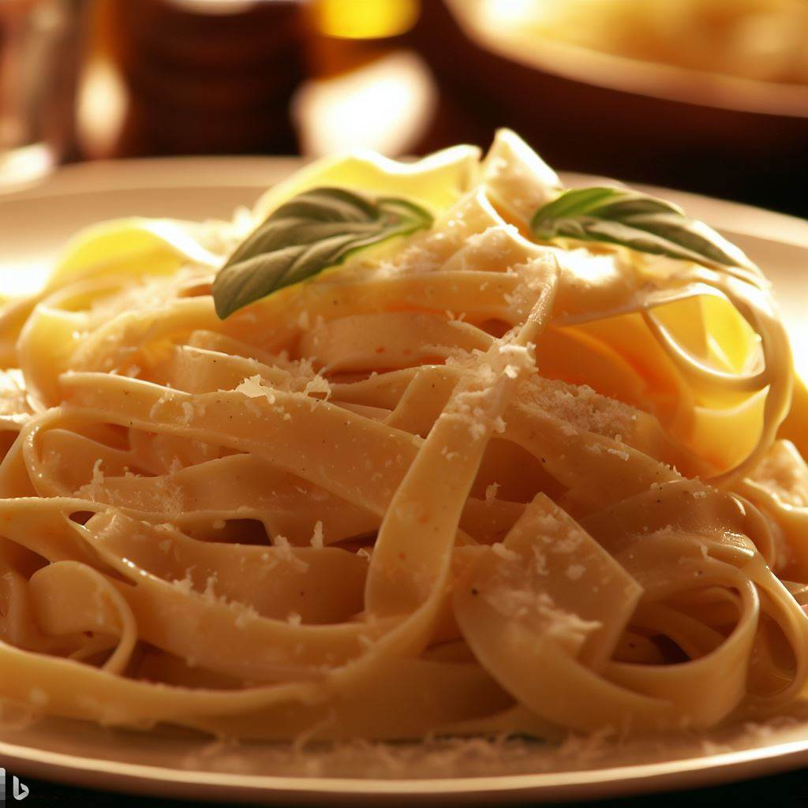
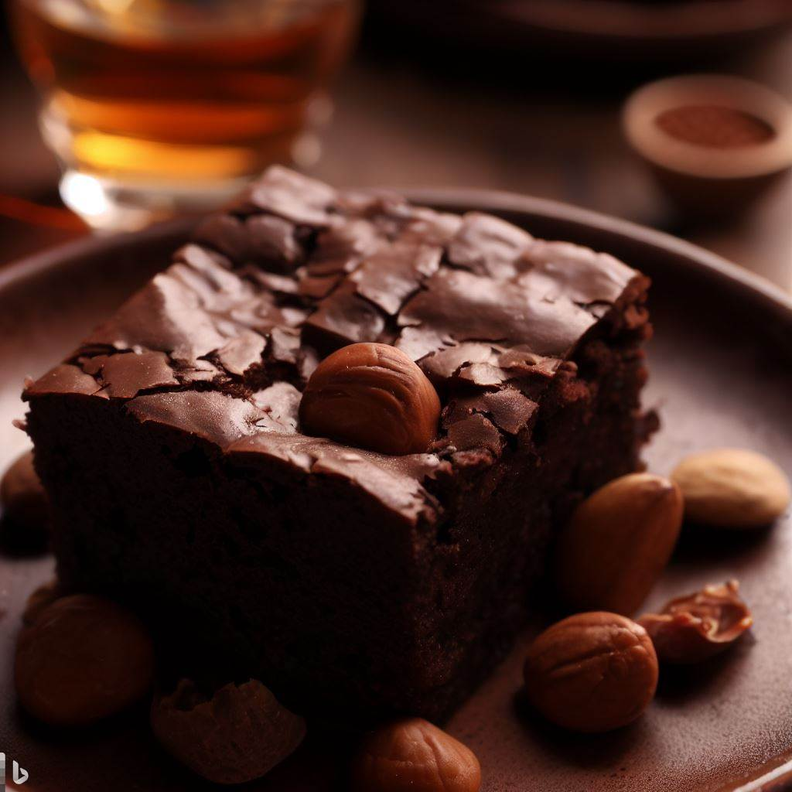

As preferidas
Veja uma seleção de boas ideias
-

Fettucine ao molho Alfredo
-

Brownie
Para refrescar
Dicas e receitas de bebidas práticas e deliciosas para refrescar o seu dia
Curiosidades
A origem do espaguete é mais antiga do que se imagina. Ele teria surgido na China há cerca de quatro mil anos e provavelmente chegado à Europa através dos árabes.
Os pudins antigos eram servidos como uma massa sólida, sendo a mistura de vários ingredientes unidos por uma liga, como a farinha de trigo, ovos, uma mistura de gordura e farinha ou algum outro cereal.
TOP 3: Pratos favoritos dos brasileiros
- 1 - Lasanha: o prato típico da Itália é o que o brasileiro mais ama. Feita de massas em tira, molho e que pode ter diferentes recheios (queijo, carne moída e outros), a lasanha é uma opção prática e muito saborosa;
- 2 - Arroz: pode parecer um pouco estranho, mas o arroz entrou no segundo lugar entre as comidas favoritas dos brasileiros. É claro que o prato vem com acompanhamentos, afinal esse é um dos ingredientes do famoso PF (Prato Feito), típico do Brasil;
- 3- Macarrão: mais uma vez entra na lista um prato italiano. Na verdade, isso não é novidade, uma vez que esse tipo de massa é super versátil (e o termo “macarrão” serve para englobar vários tipos de massas, como espaguete, penne, etc);